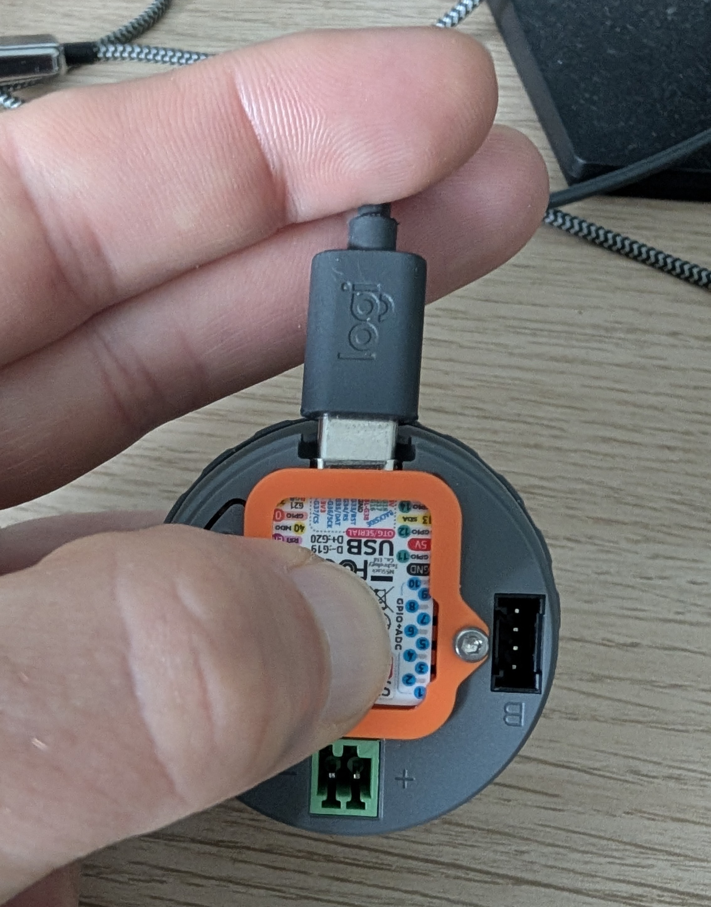
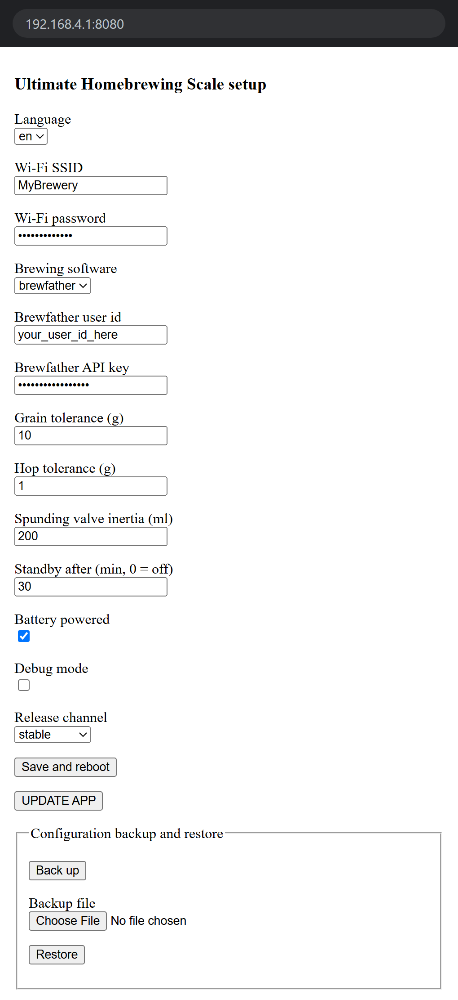
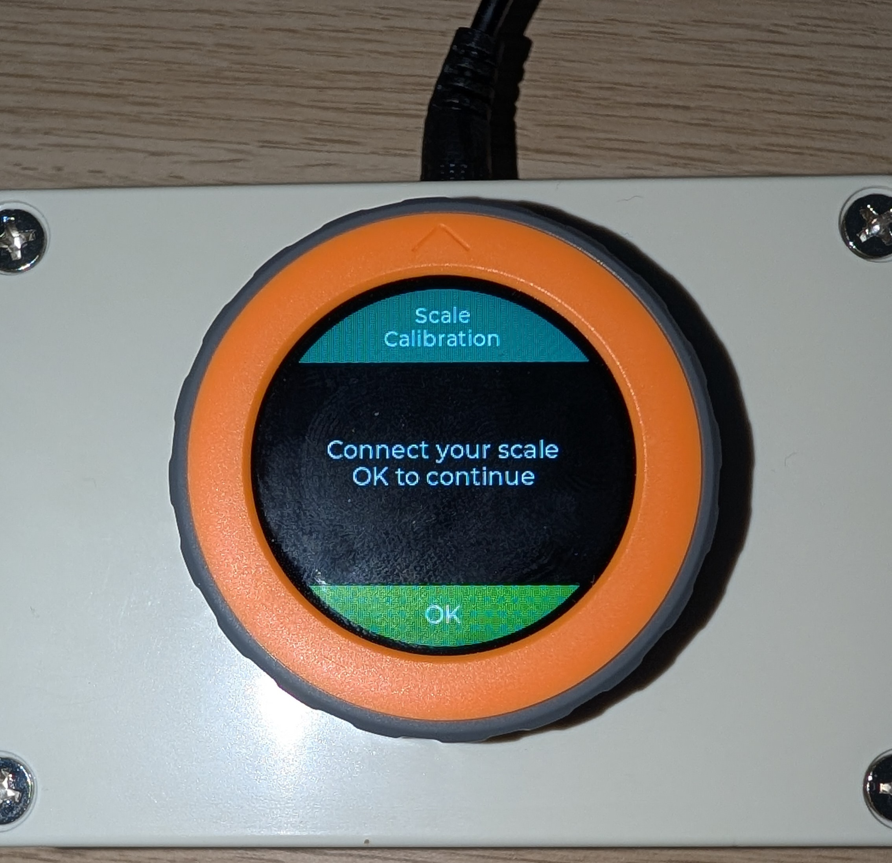
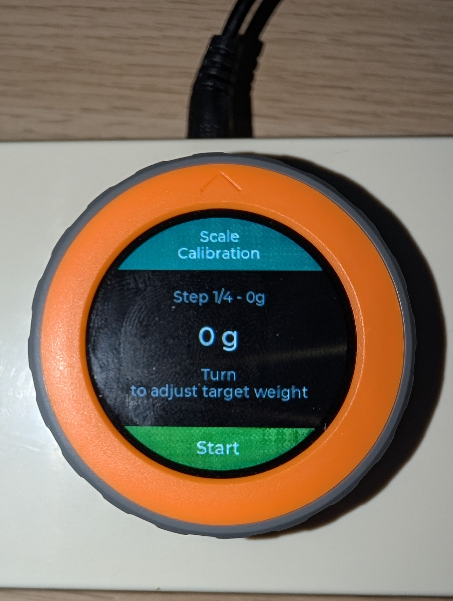
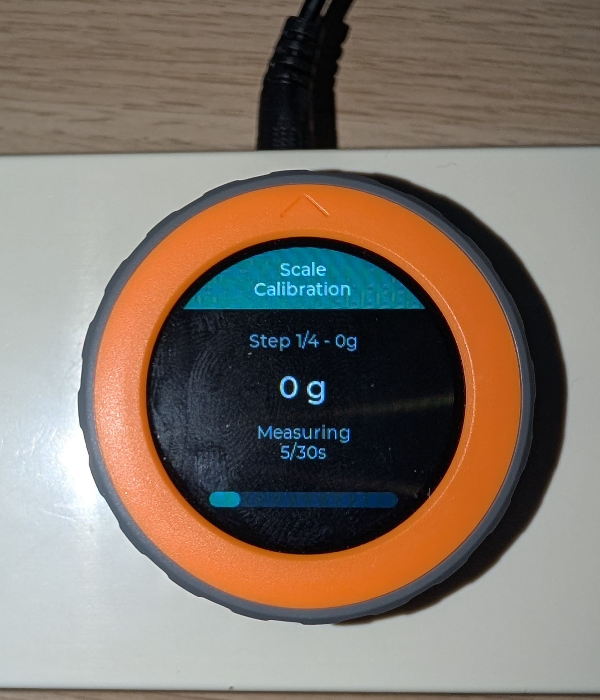

M5Stack Dial
Utilisez un cable USB-C data. Les cables uniquement prevus pour la charge echouent souvent au flash.
Configuration M5Stack Dial
Flashez le firmware personnalise, connectez le Dial au Wi-Fi, renseignez vos identifiants Brewfather et calibrez la balance depuis l'assistant integre.
Preparez le Dial, le materiel de pesee et les identifiants que vous renseignerez apres le premier demarrage.
Utilisez un cable USB-C data. Les cables uniquement prevus pour la charge echouent souvent au flash.
Le flash du firmware utilise Web Serial : utilisez Chrome ou Edge sur un ordinateur.
Utilisez-le apres le flash pour rejoindre le Wi-Fi de configuration du Dial et scanner le QR code.
L'assistant utilise par defaut les points 0 g, 500 g, 5000 g et 20000 g.
Suivez les etapes dans l'ordre. Le Dial redemarrera plusieurs fois ; c'est normal.
Debranchez l'USB-C. Maintenez le bouton arriere BOOT / G0, branchez le Dial a votre ordinateur en gardant le bouton appuye, puis relachez-le une fois la connexion USB etablie.

Sur le M5Stack Dial, c'est la sequence de mode telechargement de l'ESP32-S3 : maintenez G0 avant la mise sous tension, puis relachez apres l'alimentation. M5Stack le documente dans les notes du mode download du Dial.
Cliquez sur le bouton d'installation, choisissez le port serie du Dial et suivez les instructions du navigateur. Si l'effacement de l'appareil est propose, choisissez l'option d'effacement pour une premiere installation propre.
Quand le flash est termine, debranchez et rebranchez l'USB-C, ou appuyez sur reset. Lors d'une installation neuve, l'application cree sa configuration par defaut et ouvre automatiquement l'ecran de configuration.
Comme aucun identifiant Wi-Fi n'est encore enregistre, le Dial demarre son propre point d'acces de configuration et affiche un QR code sur l'ecran rond.
Sur votre smartphone, ouvrez les reglages Wi-Fi et rejoignez UHS-Setup. Le reseau de configuration
n'a pas de mot de passe par defaut.
Restez connecte a ce Wi-Fi meme si le telephone indique qu'il n'a pas acces a Internet. Le telephone doit seulement joindre le Dial en local.
Scannez le QR code affiche sur le Dial. Il ouvre la page de configuration integree, normalement a
http://192.168.4.1:8080/.
Si l'application appareil photo n'ouvre pas la page, gardez le telephone connecte a UHS-Setup
et saisissez l'adresse manuellement dans le navigateur.
La page du portail est volontairement simple. Renseignez les valeurs ci-dessous, puis verifiez-les avant de sauvegarder.

UHS-Setup.| Champ | Valeur a saisir |
|---|---|
| Langue | Choisissez English ou French pour l'interface du Dial. |
| SSID Wi-Fi | Saisissez le nom exact de votre reseau Wi-Fi 2,4 GHz. |
| Mot de passe Wi-Fi | Saisissez le mot de passe de ce reseau Wi-Fi. |
| User ID Brewfather | Collez votre user ID API Brewfather. |
| Cle API Brewfather | Collez votre cle API Brewfather. Elle est masquee pendant la saisie. |
| Tolerance grains (g) | Gardez la valeur par defaut sauf si vous voulez une tolerance de pesee plus large ou plus stricte. |
| Branche de mise a jour | Gardez main pour les installations normales. |
| Logiciel de brassage | Laissez brewfather selectionne. |
Apres redemarrage, l'app cherche scale_calibration.json. Lors d'une installation neuve,
ce fichier n'existe pas encore : le Dial ouvre donc automatiquement l'assistant de calibration.



Quand le dernier point de calibration est termine, le Dial enregistre le fichier de calibration et affiche Calibration complete, OK to restart. Appuyez une fois sur le bouton du Dial.
L'application effectue un redemarrage logiciel. Au demarrage suivant, le Wi-Fi et la calibration sont enregistres, le launcher s'ouvre normalement et la balance est prete a etre utilisee avec les recettes Brewfather.
La plupart des problemes de configuration viennent du cable USB, du mode flash, du basculement Wi-Fi du telephone ou d'un mouvement pendant la calibration.
UHS-Setup et ouvrez manuellement http://192.168.4.1:8080/.